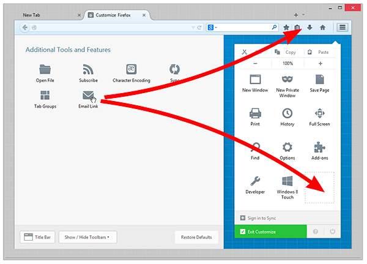

Customize Firefox
The menu button new fx menu gives you convenient access to your favorite Firefox features. Don't like the default arrangement? It's easy to customize. Is there something you use all the time? Try adding it to the main tolibar. We'll show you how.
Customize the menu or the toolbar
You can change the items that appear in the menu or your tolibar. Click the menu button and choose Customize. A special tab will open which allows you to drag and drop items in or out of the menu and the tolibar. Feel free to experiment with what works best for you. You can always start over by clicking the Restore Defaults button at the bottom of the screen.

Turn on the Title bar, Menu bar or Bookmarks tolibar
Turn on the Title bar:
- Click the menu button and choose Customize.
- Click the Title Bar button in the lower left.
- Click the green Exit Customize button.
To turn on the Menu bar or Bookmarks tolibar:
- Click the menu button new fx menu and choose Customize.
- Click the Show / Hide Tolibars dropdown menu at the bottom of the screen and choose the items you want to display.
- Click the green Exit Customize button.